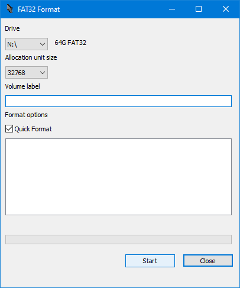
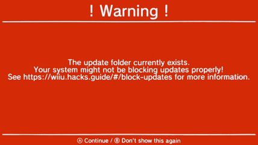

Modificar el modo virtual Wii (vWii)
Para usar esta guía con éxito necesitas:
- Una Wii U con su GamePad.
- Un Wii Remote ya sincronizado con la Wii U (no importa si tiene Motion Plus o no).
- Una tarjeta SD de 4 GB o mayor.
- Un dispositivo (PC o teléfono inteligente) para colocar archivos en la tarjeta SD.
Antes de modificar el modo virtual Wii debes tener una copia de seguridad de la memoria interna (NAND) de la Wii U. Si ya tienes un respaldo de la NAND puedes continuar, de lo contrario haz una copia de seguridad de la NAND de la Wii U.
Modificar el modo virtual Wii se puede hacer sin importar cuál sea la modificación del modo Wii U o incluso si la consola no se encuentra modificada, pero los pasos varían un poco dependiendo de cuál es la situación de la consola.
¿Cuál es la situación de la consola?
Archivos para modificar el modo virtual Wii
Recuerda que debes tener un respaldo de la NAND antes de continuar con la modificación del modo virtual Wii.
Para instalar el Homebrew Channel en el modo virtual Wii se usa la aplicacion vWii Compat Installer. Ese es el único paso que realizas en el modo Wii U, todo lo demás se realiza en el modo virtual Wii. En Tiramisu o cualquier modificación que no sea Aroma abres la aplicación vWii Compat Installer desde el Homebrew Launcher.
Descarga los archivos de necesarios
- Descarga vWii Compat Installer:
- Descarga el archivo
compat_installer-HBL.zip. - Descarga Patched IOS 80 Installer for vWii. (Código fuente)
- Descarga d2x cIOS Installer.
Coloca los archivos
- En este punto debes tener la tarjeta SD conectada a una PC (o teléfono inteligente) para colocar los archivos.
- Descomprime el archivo
Patched_IOS80_Installer_for_vWii.zip. - Copia la carpeta
appsa la raíz de la tarjeta SD. - Descomprime el archivo
d2x_cIOS_Installer.zip. - Copia la carpeta
d2x-cios-installera la carpetasd:/apps. - Descomprime el archivo
compat_installer-HBL.zip. - Copia la carpeta
compat_installera la carpetasd:/wiiu/apps. - Extrae la tarjeta SD de forma segura del dispositivo que usaste para hacer la copia de archivos e introdúcela en la ranura de la Wii U con la consola apagada.
Instala el Homebrew Channel (vWii)
Recuerda que en Tiramisu o cualquier modificación que no sea Aroma abres vWii Compat Installer desde el Homebrew Launcher.
- En este punto debes tener la Wii U apagada con la tarjeta SD introducida.
- Enciende la consola y carga la modificación que tengas instalada.
- Accede al Homebrew Launcher y carga vWii Compat Installer.
- Presiona el botón A para instalar el Homebrew Channel.
- Cuando la instalación termine presiona el botón HOME para regresar al Homebrew Launcher.
- Presiona el botón HOME y luego toca en Salir para regresar al menú de Wii U.
- Accede al modo virtual Wii (icono Menú de Wii).
Archivos para modificar el modo virtual Wii
Recuerda que debes tener un respaldo de la NAND antes de continuar con la modificación del modo virtual Wii.
Para instalar el Homebrew Channel en el modo virtual Wii se usa la aplicacion vWii Compat Installer. Ese es el único paso que realizas en el modo Wii U, todo lo demás se realiza en el modo virtual Wii. En Aroma abres la aplicación vWii Compat Installer en el menú de Wii U.
Descarga los archivos de necesarios
- Descarga vWii Compat Installer:
- Descarga el archivo
compat_installer-Aroma.zip. - Descarga Patched IOS 80 Installer for vWii. (Código fuente)
- Descarga d2x cIOS Installer.
Coloca los archivos
- En este punto debes tener la tarjeta SD conectada a una PC (o teléfono inteligente) para colocar los archivos.
- Descomprime el archivo
Patched_IOS80_Installer_for_vWii.zip. - Copia la carpeta
appsa la raíz de la tarjeta SD. - Descomprime el archivo
d2x_cIOS_Installer.zip. - Copia la carpeta
d2x-cios-installera la carpetasd:/apps. - Descomprime el archivo
compat_installer-Aroma.zip. - Copia el archivo
compat_installer.wuhba la carpetasd:/wiiu/apps. - Extrae la tarjeta SD de forma segura del dispositivo que usaste para hacer la copia de archivos e introdúcela en la ranura de la Wii U con la consola apagada.
Instala el Homebrew Channel (vWii)
Recuerda que en Aroma abres vWii Compat Installer desde el menú de Wii U.
- En este punto debes tener la Wii U apagada con la tarjeta SD introducida.
- Enciende la consola y carga Aroma.
- Accede al menú de Wii U y abre el icono de vWii Compat Installer.
- Presiona el botón A para instalar el Homebrew Channel.
- Cuando la instalación termine presiona el botón HOME y luego toca en Cerrar programa para regresar al menú de Wii U.
- Accede el modo virtual Wii (icono Menú de Wii).
Prepara la tarjeta SD
Recuerda que debes tener un respaldo de la NAND antes de continuar con la modificación del modo virtual Wii.
La tarjeta SD colocada en el puerto SD de la Wii U debe estar formateada en FAT32 ya que la Wii U sólo reconoce tarjetas SD formateadas en FAT32.
Para tener la mejor estabilidad y compatibilidad se recomienda un tamaño de unidad de asignación (allocation unit size) de 32 kilobytes (32768) y dejar la etiqueta del volumen (volume label) en blanco ya que poner una etiqueta del volumen puede causar problemas con algunas aplicaciones homebrew.
- Conecta la tarjeta SD a una PC para formatearla.
- Para tarjetas SD de 4 GB hasta 32 GB puedes usar la aplicación de formateo de Windows:

- Para tarjetas SD de 4 GB hasta 2 TB puedes usar la aplicación GUIFormat:

Archivos para modificar el modo virtual Wii
No vamos a modificar nada en el modo Wii U, todo se queda en la tarjeta SD. Los archivos de Tiramisu tienen todo lo necesario para ejecutar el exploit del navegador y abrir el Homebrew Launcher, de esta forma es posible modificar el modo virtual Wii sin modificar nada en el modo Wii U (principal).
Tiramisu es fácil de colocar, sólo debes descargar los archivos más recientes y ponerlos en la tarjeta SD.
Para instalar el Homebrew Channel en el modo virtual Wii se usa la aplicacion vWii Compat Installer. Ese es el único paso que realizas en el modo Wii U, todo lo demás se realiza en el modo virtual Wii. En Tiramisu o cualquier modificación que no sea Aroma abres la aplicación vWii Compat Installer desde el Homebrew Launcher.
Descarga los archivos de necesarios
- Este enlace lleva al sitio oficial: Tiramisu para tu café.
- Dentro del sitio debes tocar en el botón Download Tiramisu para iniciar la descarga de un archivo
.zip. - Descarga vWii Compat Installer:
- Descarga el archivo
compat_installer-HBL.zip. - Descarga Patched IOS 80 Installer for vWii. (Código fuente)
- Descarga d2x cIOS Installer.
Coloca los archivos
- En este punto debes tener la tarjeta SD conectada a una PC (o teléfono inteligente) para colocar los archivos.
- Descomprime el archivo
.zipde Tiramisu. - Copia la carpeta
wiiuy el archivoversions.jsona la raíz de la tarjeta SD. - Tu tarjeta SD debe quedar como esta imagen:

- Descomprime el archivo
Patched_IOS80_Installer_for_vWii.zip. - Copia la carpeta
appsa la raíz de la tarjeta SD. - Descomprime el archivo
d2x_cIOS_Installer.zip. - Copia la carpeta
d2x-cios-installera la carpetasd:/apps. - Descomprime el archivo
compat_installer-HBL.zip. - Copia la carpeta
compat_installera la carpetasd:/wiiu/apps. - Extrae la tarjeta SD de forma segura del dispositivo que usaste para hacer la copia de archivos e introdúcela en la ranura de la Wii U con la consola apagada.
Instala el Homebrew Channel (vWii)
Con los archivos correctos en la tarjeta SD puedes ejecutar el exploit del navegador y abrir el Homebrew Launcher desde el cual puedes cargar la aplicación vWii Compat Installer para instalar el Homebrew Channel en el modo virtual Wii sin modificar nada el modo Wii U (principal).
- En este punto debes tener la Wii U apagada con la tarjeta SD introducida.
- Enciende la consola y accede al menú de Wii U. Asegúrate de que la consola tenga acceso a internet para este paso.
- Abre el navegador de internet de la consola.
- Introduce la URL: u.wiidb.de (puedes consultar paginas alternativas aquí).

- Al cargar la página por completo mostrará en grande el enlace HAXX.

- Toca el enlace HAXX, cuando la pantalla del GamePad se ponga completamente en blanco mantén presionado el botón X hasta que salga el menú Environment Loader.
- Acceder a ese menú es necesario para abrir el Homebrew Launcher. Si no lograste entrar a ese menú sigue los pasos de las notas de abajo.
- Navega por el menú usando las flechas del D-Pad del GamePad, selecciona tiramisu y presiona el botón A.
- Presiona el botón B para ignorar el mensaje de alerta.
 - Ahora debes estar en el Boot Selector de Tiramisu, navega por el menú usando las flechas del D-Pad del GamePad, selecciona Homebrew Launcher y presiona el botón A para abrirlo.
- Ahora debes estar en el Homebrew Launcher, carga vWii Compat Installer.
- Presiona el botón A para instalar el Homebrew Channel.
- Cuando la instalación termine presiona el botón HOME para regresar al Homebrew Launcher.
- Presiona el botón HOME y luego toca en Salir para regresar al menú de Wii U.
- Accede al modo virtual Wii (icono Menú de Wii).
sd:/wiiu/payload.elf. Mantén presionado el botón POWER de la consola hasta que se apague, revisa los archivos en la tarjeta SD y vuelve a intentar el exploit del navegador.Instalar cIOS en el modo virtual Wii
Los custom IOS (cIOS) constituyen el CFW del modo virtual Wii. Los cIOS quedan instalados en la memoria interna de la Wii U (SLCCMPT) y no dependen de ninguna forma de la modificación del modo Wii U (principal) ni de archivos en la tarjeta SD después de ser instalados.
.wad en ningún otro lugar que no sea la carpeta sd:/app.- En este punto debes tener la Wii U encendida en el modo virtual Wii con la tarjeta SD introducida. El Homebrew Channel debe estar en el menú de Wii.
- Abre el Homebrew Channel.
- Carga d2x cIOS Installer.
- Ajusta todo para que coincida con lo siguiente:
- Select cIOS:
d2x-v11-beta1-vWii - Select cIOS base:
56 - Select cIOS slot:
249 - Presiona el botón A para instalar.
- Ajusta todo para que coincida con lo siguiente:
- Select cIOS:
d2x-v11-beta1-vWii - Select cIOS base:
57 - Select cIOS slot:
250 - Presiona el botón A para instalar.
- Ajusta todo para que coincida con lo siguiente:
- Select cIOS:
d2x-v11-beta1-vWii - Select cIOS base:
58 - Select cIOS slot:
251 - Presiona el botón A para instalar.
- Presiona el botón B para salir.
Parchar el IOS 80
- En este punto debes estar en el Homebrew Channel.
- Carga Patched IOS80 Installer for vWii.
- Lee la advertencia y espera 30 segundos.
- Presiona cualquier botón para instalar.
- Espera hasta que se muestre el mensaje
IOS80 Installation is complete!. - Presiona cualquier botón para salir.
Añadir aplicaciones heredadas de Wii
Ya tienes el modo virtual Wii modificado, pero para aprovecharlo hay que agregar aplicaciones. En caso de que quieras añadir alguna aplicación que no está aquí o que quieras actualizar alguna aplicación es impórtate que aprendas a colocarlas por tu cuenta.
En general las aplicaciones heredadas de Wii se colocan en la carpeta sd:/apps, observa la ruta de carpetas en las imágenes de referencia. Si tienes dudas usa las imágenes para comprobar que ubicaste cada aplicación correctamente.
Las aplicaciones se abren usando el menú del Homebrew Channel ("canal de aplicaciones hechas en casa").
Añadir aplicaciones al Homebrew Channel
- Si tienes encendida la consola apágala.
- Saca la tarjeta SD de la Wii U y ponla en tu PC (o teléfono inteligente) para poner archivos.
Vamos a descargar los archivos de las siguientes aplicaciones:
Ahora vamos a instalar las aplicaciones:
- Descomprime el archivo
usbloader_gx.zip - Entra en la carpeta
appsdel archivo descomprimido. - Copia la carpeta
usbloader_gxy pégala en la carpetasd:/apps. - Descomprime el archivo
homebrew_browser_v0.3.9e.zip - Entra en la carpeta del archivo descomprimido.
- Copia la carpeta
homebrew_browsery pégala en la carpetasd:/apps. - Descomprime el archivo
wiiflow.zip - Entra en la carpeta del archivo descomprimido.
- Copia la carpeta
wiiflowy pégala en la raíz de la tarjeta SD. - Entra en la carpeta
appsdel archivo descomprimido. - Copia la carpeta
wiiflowy pégala en la carpetasd:/apps. - Descomprime el archivo
WiiModLite.zip - Entra en la carpeta
appsdel archivo descomprimido. - Copia la carpeta
WiiModLitey pégala en la carpetasd:/apps.
Las aplicaciones que acabas de instalar sirven para:
- USB Loader GX es un cargador de juegos en formato WBFS. Usa Wii Backup Manager para colocar juegos de Wii (ISO o WBFS) desde una PC a la tarjeta SD o dispositivo USB compatible.
- El Homebrew Browser permite buscar y descargar aplicaciones homebrew heredadas de Wii directamente desde la Wii U.
- Wiiflow Lite es un cargador de juegos en formato WBFS. Usa Wii Backup Manager para colocar juegos de Wii (ISO o WBFS) desde una PC a la tarjeta SD o dispositivo USB compatible.
- Wii Mod Lite permite instalar archivos WAD. Existen otros instaladores de WADs que puedes usar en el modo virtual Wii, como por ejemplo Some YAWMM Mod, pero en cualquier caso, actualmente no se usa WAD Manager ni en una Wii clásica ni mucho menos en el modo virtual Wii de la Wii U.
- Extrae la tarjeta SD de forma segura del dispositivo que usaste para hacer la copia de archivos e introdúcela en la ranura de la Wii U con la consola apagada.
Importante recuerda que:
- Desde el menú del Homebrew Channel abres las aplicaciones homebrew heredadas de Wii como USB Loader GX, Wiiflow Lite, Wii Mod Lite, etc.
- Ocasionalmente haz una copia de seguridad de todos los archivos de la tarjeta SD, si en algún momento se daña o pierde la tarjeta SD puedes reponer los archivos fácilmente.
Aquí termina la guía de modificación del modo virtual Wii.